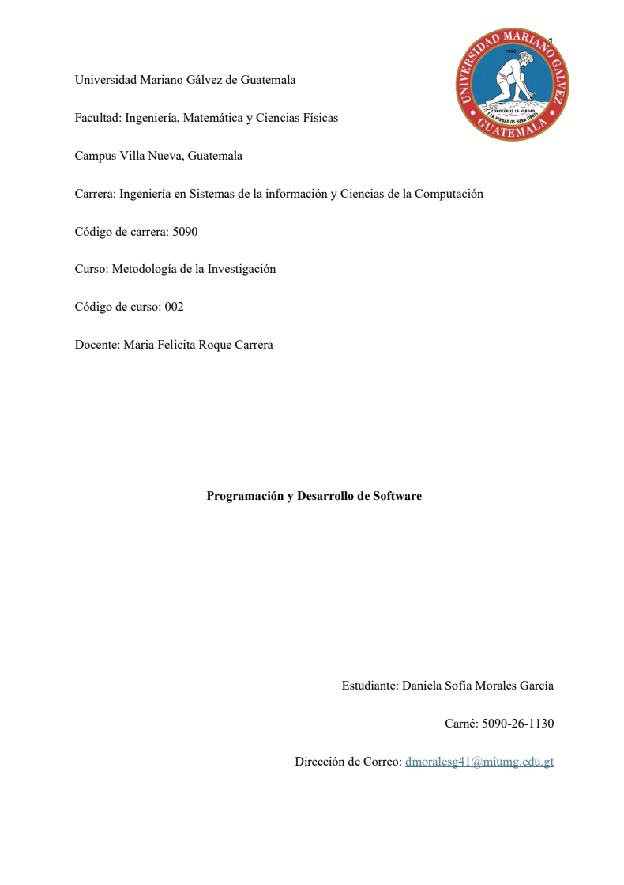
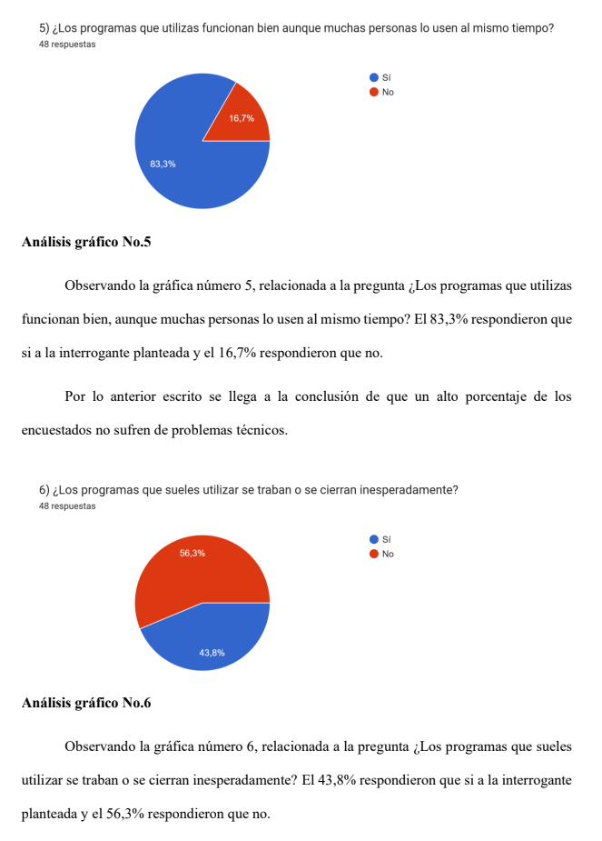
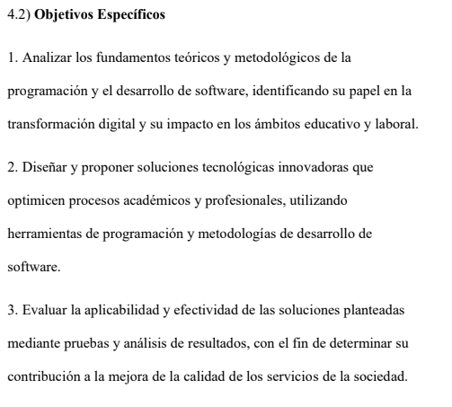

Proyecto de Metodología de la Investigación: Tesis
Descripción: El proyecto consiste en la elaboración de una tesis individual, en la cual cada estudiante selecciona un tema de interés personal
y lo convierte en objeto de estudio formal. Este proceso implica desarrollar un planteamiento del problema que delimite la situación a investigar,
formular objetivos claros y precisos, y construir los cuatro marcos fundamentales: conceptual, teórico, metodológico y operativo que sustenten la investigación.
Posteriormente, se define una metodología adecuada para la recolección y análisis de datos, lo que permite obtener resultados coherentes, válidos y fundamentados.
Al tratarse de un trabajo individual, este proyecto fomenta la autonomía, la disciplina y la capacidad crítica, convirtiéndose no solo en un requisito académico,
sino también en una oportunidad para demostrar competencias investigativas, aplicar el conocimiento adquirido y aportar nuevas perspectivas en el área elegida.
Objetivos
Los objetivos de este proyecto de tesis individual se orientan a seleccionar un tema de interés personal y convertirlo en objeto de estudio formal, estableciendo un planteamiento del problema que delimite claramente la situación a investigar. Asimismo, se busca formular objetivos precisos y alcanzables, construir los cuatro marcos fundamentales conceptual, teórico, metodológico y operativo— que sustenten la investigación, y definir una metodología adecuada para la recolección y análisis de datos. Con ello, se pretende obtener resultados válidos y coherentes que reflejen la autonomía, disciplina y capacidad crítica del estudiante, promoviendo el desarrollo de competencias investigativas y la generación de aportes significativos en el área elegida.
Evidencia

.png)

